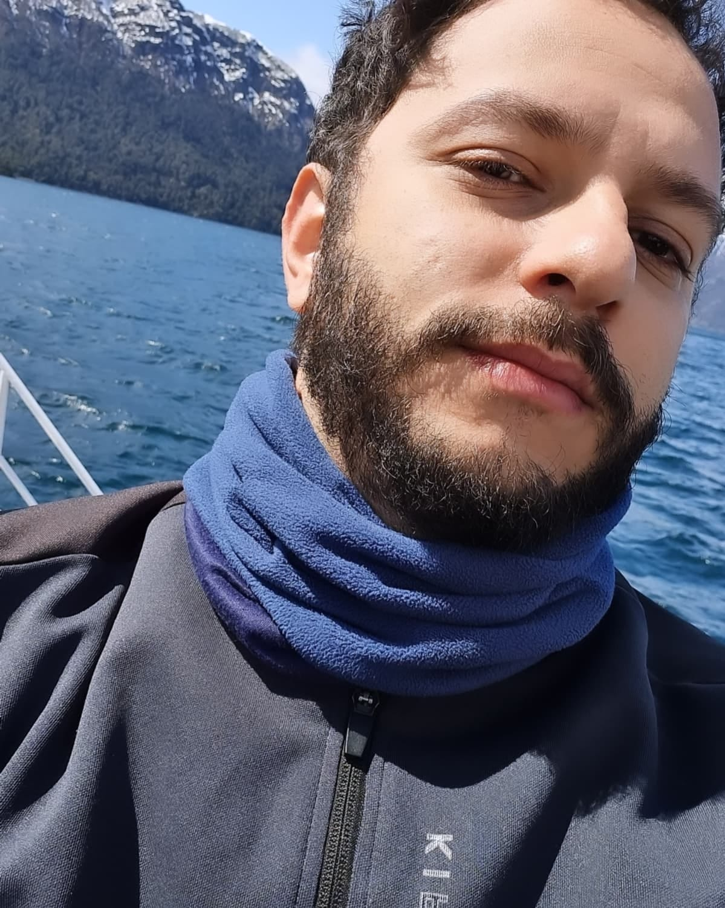

Aníbal Cantalice
Cientista · Professor
Formação
Doutorado em Etnobiologia e Conservação da Natureza · 2025
Universidade Federal Rural de Pernambuco (UFRPE)
Mestrado em Desenvolvimento e Meio Ambiente · 2021
Universidade Federal do Piauí (UFPI)
Licenciatura em Ciências Biológicas · 2017
Universidade Federal do Piauí (UFPI)
Sobre mim
Minha trajetória acadêmica começou com uma curiosidade simples. Entender como as pessoas percebem, utilizam e transformam o ambiente ao seu redor. A Etnobiologia se tornou o espaço onde encontrei muitas dessas perguntas e, mais recentemente, tenho buscado explorá-las em escalas mais amplas — para além das comunidades locais — por meio da macroetnobiologia.
No caminho, acabei desenvolvendo outras duas paixões: analisar dados e programar. Gosto especialmente de pensar em como a programação pode tornar as análises mais eficientes, reproduzíveis e claras, e a linguagem R acabou se tornando uma das minhas principais ferramentas nesse processo. Também tenho experiência com estatística inferencial, modelagem estatística e análise e visualização de dados tabulares e geoespaciais.
Entre trabalho de campo, código, modelos, mapas e algumas horas tentando descobrir por que um script resolveu se rebelar, é nessa mistura de pessoas, ambiente, programação, estatística e dados que tenho construído minha trajetória científica.
Interesses de pesquisa
Conservação
Ecologia Númerica
Etnobiologia
Macroetnobiologia
Sistemas socioecológicos
Competências
Hard Skills
Soft Skills
nível desenvolvido
a desenvolver
Currículo
Uma versão completa da minha trajetória acadêmica e profissional está disponível no currículo abaixo.